2021（R3）9月2日 勝浦温泉
しょうこりもなく、またまた紀勢線の旅をしてきました。
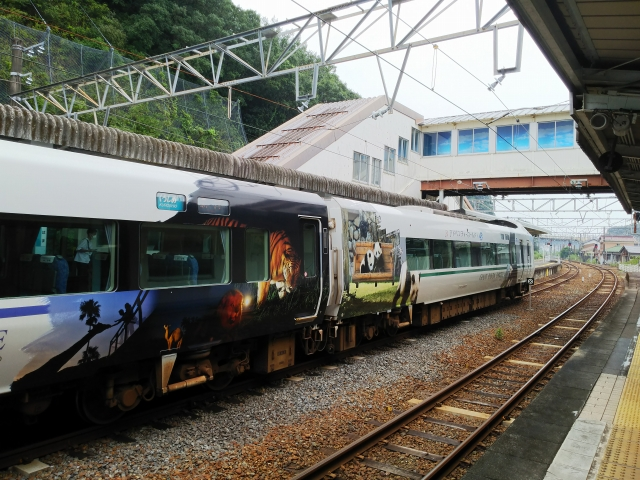
前回と全く同じ列車で白浜まで到着。
鉄分不足の方へのサービスショット。パンダくろし
お『Smileアドベンチャートレイン』のおでましで
す。
１０分近く停車するので、駅前まで出てみます。
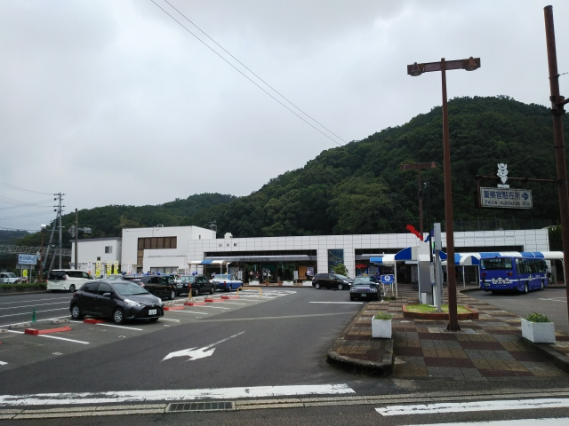
白浜駅。関西を代表する観光地の駅にしては、さび
れ気味っすね。
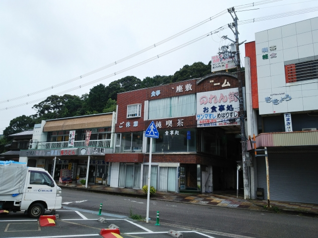
昭和の頃は賑わったであろう駅前の店々。
ほとんど閉まってます・・・
のれん街って、どんな感じなんやろ。
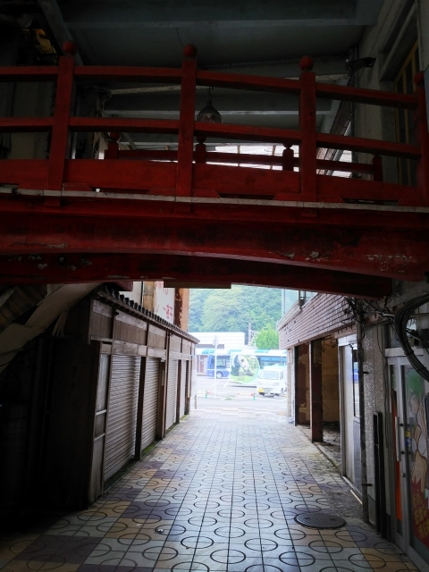
入ってみると、渡り廊下ならぬ、「渡り橋」が通路の上に架かってまし
た。
全盛期は酔客がこの橋を歩いてたんでしょうか・・・
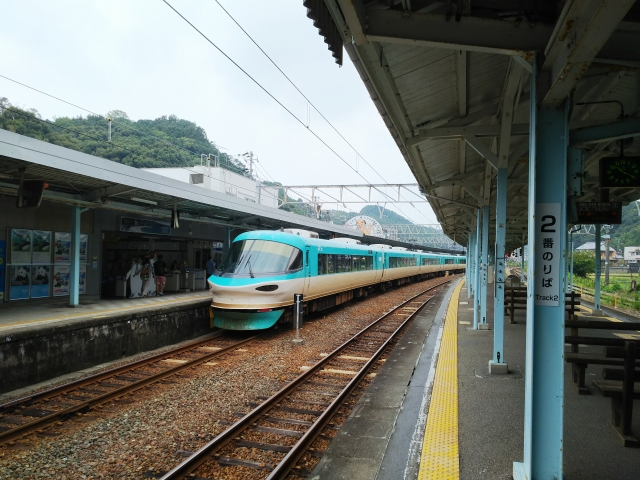
またまた鉄分不足の方へのサービスショット。駅に
戻ると、オーシャンアローが到着。
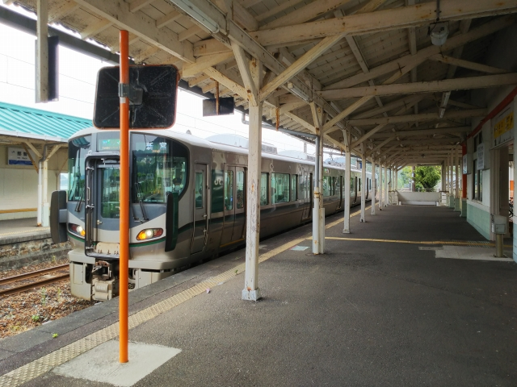
ロングシート車に延々揺られて、ようやく目的の駅
に到着。
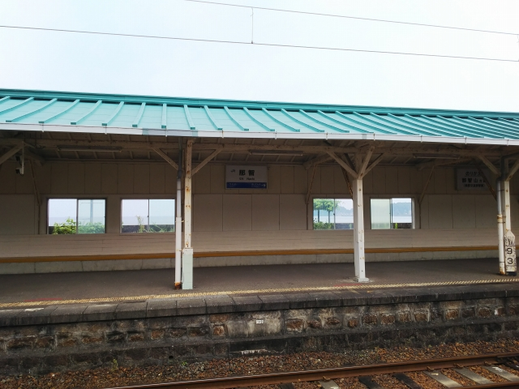
那智駅です。
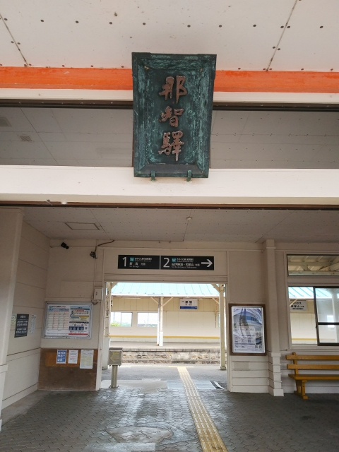
昔はブルートレインの紀伊が停まってた駅ですが、もう駅には売店のひと
つもございません。
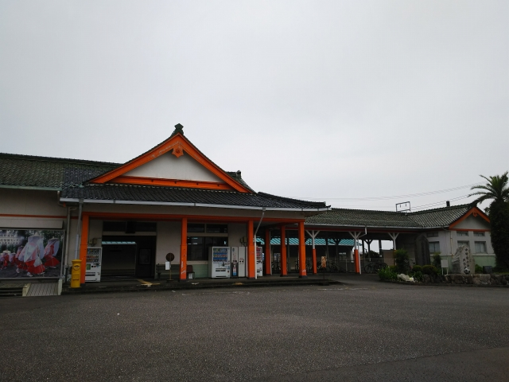
駅舎は那智大社を模してるんかな？
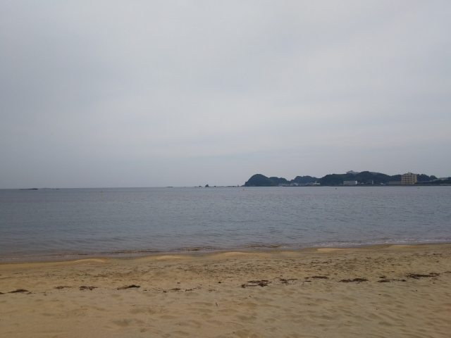
駅の裏は海岸になってます。
その昔、ここから遥か南洋上にある「補陀洛」を目
指して、小さな木造船で出航していったとか。
その人たちがどうなったかを考えると、恐ろしい・
・・
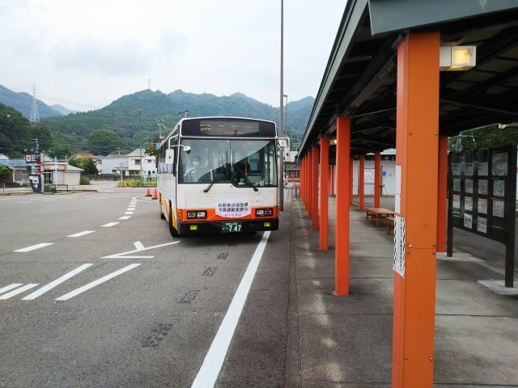
ではバスに乗って目的地へ。
今回の目的地は、那智の滝です！
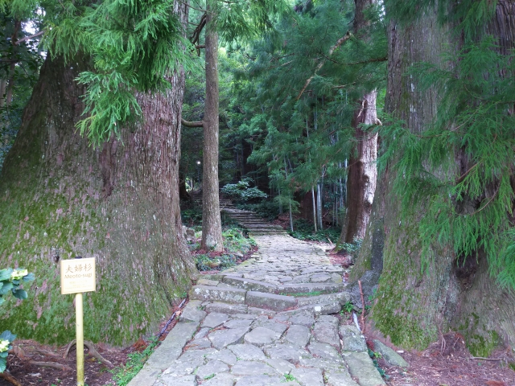
せっかくなので、大門坂という古道を歩いて向かう
ことにします。
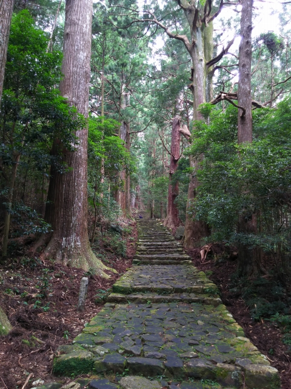
昔、山登りをがんがんやってたことがウソのように、こんな坂で。
もバテバテです。
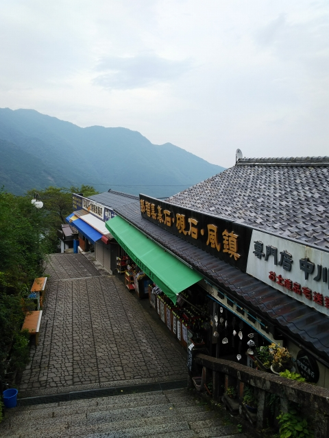
古道を抜けても、まだまだ登りは続いてて、悲鳴をあげそうでした。
那智といえば那智黒。お土産屋さんには黒い石を加工した土産がたくさん
並んでました。
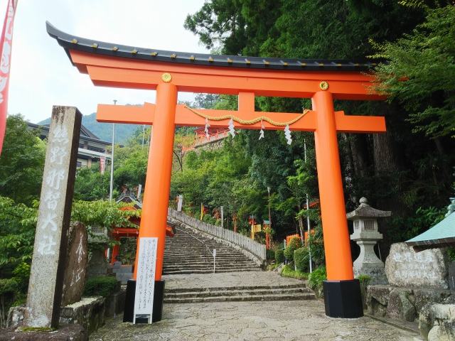
ようやく那智大社に到着。
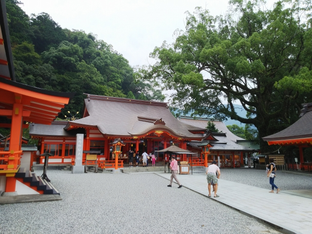
なんか、えらく新しく感じるんですが・・・。
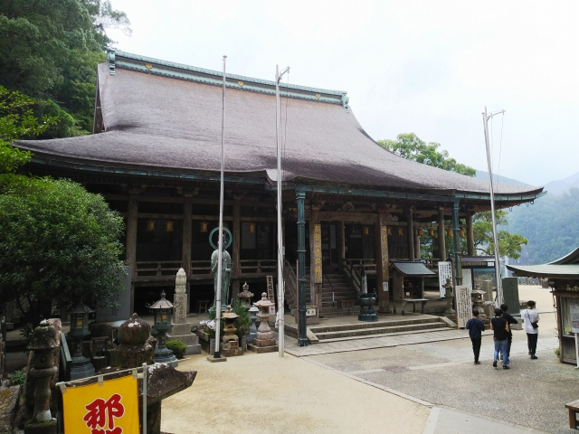
すぐ隣に、青岸渡寺があります。西国三十三所第1番
札所。この本堂は秀吉が再建したものだそうです。
やっぱ古い建物のほうがありがたく感じる・・・
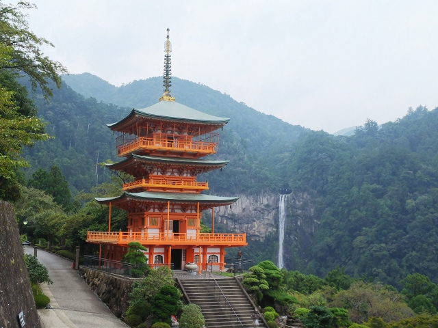
そしてとうとう滝が見えてきました！
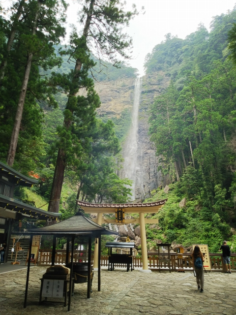
夏場に見る滝っちゅうのはすがすがしいもんですね。
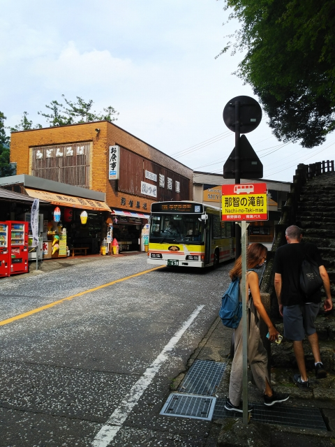
帰りはバスで戻ります。
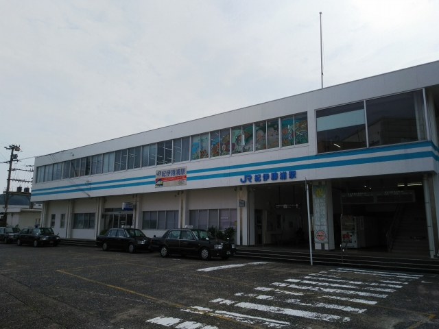
帰りは紀伊勝浦駅まで戻ります。
こんな小さな駅なんや。
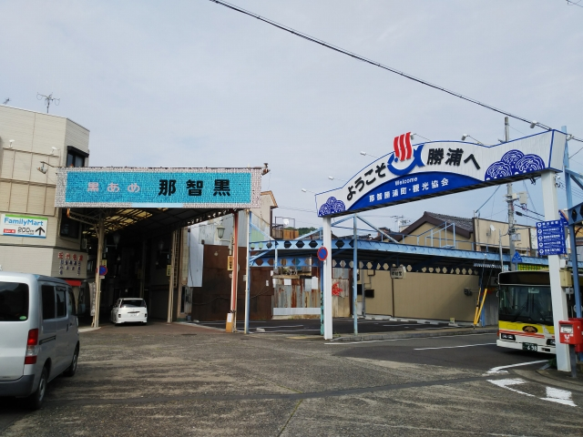
那智黒の看板がええ感じです。
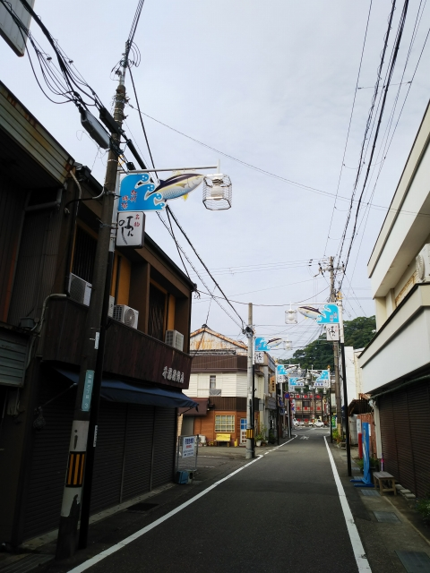
駅前を歩くと、街灯の飾りがまぐろでした。
歩いてると、この規模の街で本屋が２件もありました。
こう見えて、文化的な街なんやろか。
で、最後にひとっぷろ浴びたいと思って、街中にある温泉へ。
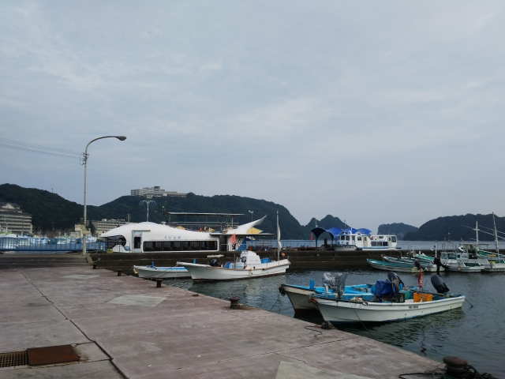
駅から海は近いです。
有名な温泉旅館の建物も見えますが、外来入浴はや
ってません。
残念！
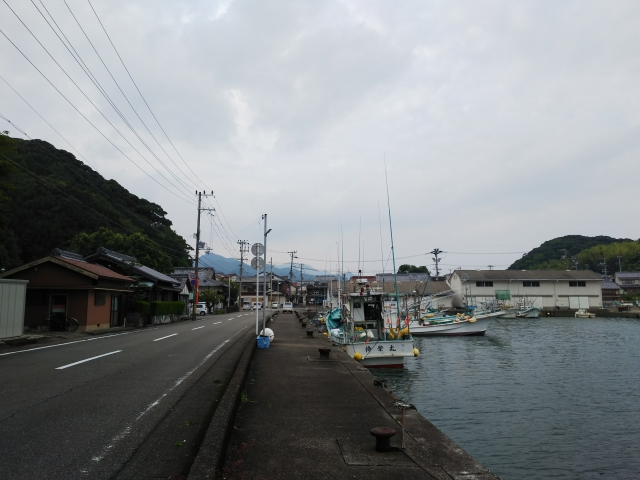
海沿いをしばらく歩いていくと・・・
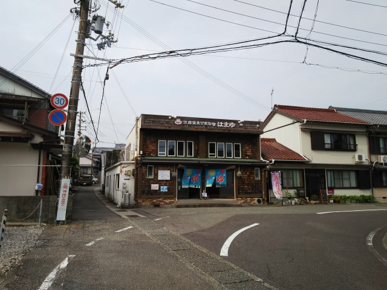
ありましたありました！はまゆです。
見た目と違って、中は歴史を感じさせるつくりで、
お湯も硫黄のにおいのするいいお湯でした。
（もちろん温泉です）
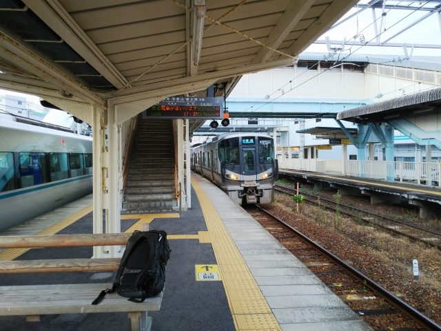
帰りの電車まであまり時間がなく、ゆっくり浸かる
時間がなかったのが残念。
ロングシートに揺られて、帰ります。
１０月のＪＲ西日本の減量ダイヤの後は、こんな日
帰りを青春１８で出来るんやろか・・・
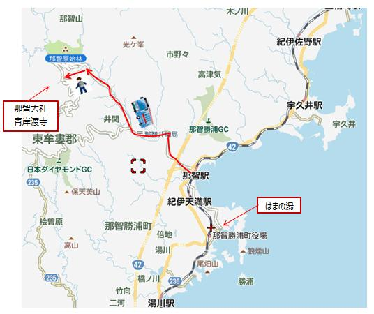